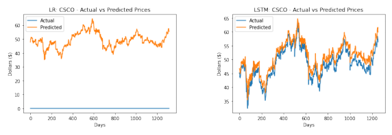
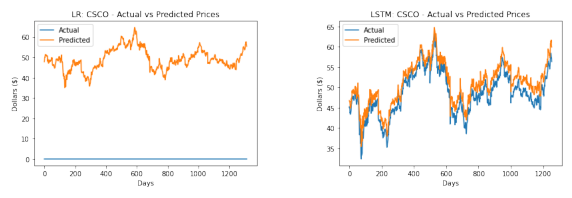
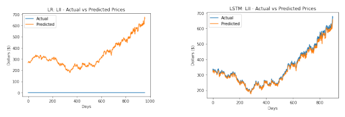
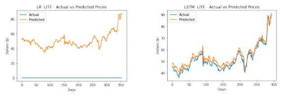
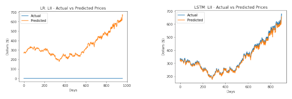
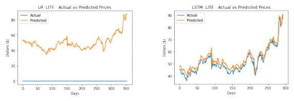

Comparing Machine Learning Models for Stock Market Price Prediction#
CS 5805: Machine Learning Final Project
Pranesh Ambokar, Mohammad Heydari, Roshan Ravindran, and Leo St. Amour
Overview#
This project analyzes and compares the performance characteristics and prediction accuracy trade-offs of linear regression and long short-term memory (LSTM) when applied to stock market prediction. We train the models using historical stock data and ask them to predict a stock’s closing price given its opening, low, and high prices.
Environmental Setup#
This project depends on several python machine learning and data science libraries:
pandas: a powerful library for manipulating data in aDataFrameobject.numpy: a library for aiding scientific computing.matplotlib: a library for plotting graphs.scikit-learn: a machine learning library that implements linear regression.tensorflow: a machine learning library that provides an LSTM implementation.keras_tuner: a library that aids in hyper-parameter fine-tuning.
To install the dependencies, run the following command:
$ python3 -m pip install numpy pandas matplotlib scikit-learn tensorflow keras_tuner
# General libraries
import glob
import os
import time
# Scientific computing and data manipulation
import pandas as pd
import numpy as np
# Graphing
import matplotlib.pyplot as plt
import matplotlib.image as mpimg
# Linear regression
from sklearn.linear_model import LinearRegression
# LSTM
os.environ['CUDA_VISIBLE_DEVICES'] = '-1'
import tensorflow as tf
from tensorflow.keras.callbacks import EarlyStopping
from tensorflow.keras.optimizers import Adam
from tensorflow.keras.models import Sequential
from tensorflow.keras.layers import LSTM, Dense, Dropout, Input
tf.get_logger().setLevel('ERROR')
## Fine-tune LSTM hyper-parameters
import keras_tuner as kt
## Only retrain the LSTM model if explicitly instructed; otherwise, load a saved model
from tensorflow.keras.saving import load_model
retrain_lstm = False
# Prices will be scaled to improve model efficiency
from sklearn.preprocessing import MinMaxScaler
# Accuracy metrics
from sklearn.metrics import mean_squared_error, r2_score, mean_absolute_error
If you want to force re-train the LSTM model, uncomment and run the following cell. If not, the saved model will be loaded.
# retrain_lstm = True
Data and Preprocessing#
Data#
Our data set consists of historical price data for 100 stocks, 50 of which are large-cap and 50 of which are mid-cap. The data for each stock is stored as a CSV file containing the following columns: Date, Open, High, Low, Close, Adj Close, and Volume. For our experiments, we used the Open, High, and Low columns as input features and the Close column as the output. We create our overall data set by aggregating each stock’s historical data into a single data frame.
After aggregating the data, the data points are sorted by date. This step is important because the training data for the LSTM model must maintain its time-series integrity.
# Define paths for the directories
mid_cap_path = './mid_cap'
large_cap_path = './large_cap'
# Load files from both directories
all_files = glob.glob(os.path.join(mid_cap_path, '*_data.csv')) + glob.glob(os.path.join(large_cap_path, '*_data.csv'))
df_list = []
for csv in all_files:
df = pd.read_csv(csv)
df['Stock'] = os.path.basename(csv).split('_')[0] # Extract stock ticker from filename
df_list.append(df)
data = pd.concat(df_list, ignore_index=True)
data = data.sort_values(['Stock', 'Date'])
Training, Validation, and Testing Sets#
We split our data set into training, validation, and testing sets using a 70/15/15 ratio. To accomplish this, the first 70% of dates for each stock are added to a testing set, the next 15% for each stock is added to a validation set, and the final 15% is added to a testing set.
After the training, validation, and testing sets have been established, they are split into input (Open, Low, and High) and output (Close) components.
# Create training/validation/testing sets using a 70/15/15 split
training_data = []
validation_data = []
testing_data = []
for stock in data['Stock'].unique():
stock_data = data[data['Stock'] == stock]
train_size = int(len(stock_data) * 0.7)
val_size = int(len(stock_data) * 0.15)
# Split the data for each stock
training_data.append(stock_data.iloc[:train_size])
validation_data.append(stock_data.iloc[train_size:train_size+val_size])
testing_data.append(stock_data.iloc[train_size+val_size:])
# Concatenate the split data
training_data = pd.concat(training_data, ignore_index=True)
validation_data = pd.concat(validation_data, ignore_index=True)
testing_data = pd.concat(testing_data, ignore_index=True)
# Define the features (Open, Low, High) and target (Close)
training_X = training_data[['Open', 'Low', 'High']]
training_Y = training_data[['Close']]
validation_X = validation_data[['Open', 'Low', 'High']]
validation_Y = validation_data[['Close']]
testing_X = testing_data[['Open', 'Low', 'High']]
testing_Y = testing_data[['Close']]
# Check the number of features in the training data
num_features = training_X.shape[1]
# Output the split data for verification
print(f"Training data: {len(training_data)} rows")
print(f"Validation data: {len(validation_data)} rows")
print(f"Testing data: {len(testing_data)} rows")
Training data: 571741 rows
Validation data: 122477 rows
Testing data: 122631 rows
To improve the training efficiency of LSTM, we scale all prices to a value between zero and one.
# Scale the data
scaler_X = MinMaxScaler(feature_range=(0, 1)) # For the features
scaler_Y = MinMaxScaler(feature_range=(0, 1)) # For the target (Close)
# Scale the features and target for training and testing sets
training_X_scaled = scaler_X.fit_transform(training_X)
testing_X_scaled = scaler_X.transform(testing_X)
validation_X_scaled = scaler_X.transform(validation_X)
# Scale the target variable (Close) for training and testing sets
training_Y_scaled = scaler_Y.fit_transform(training_Y)
testing_Y_scaled = scaler_Y.transform(testing_Y)
validation_Y_scaled = scaler_Y.transform(validation_Y)
The input to an LSTM model is different than a linear regression. Instead of an array of input data points, it accepts an array of sequences. This required us to transform the inputs and outputs of each data set. We have selected 60, meaning that the algorithm will look back for 60 days when training.
def create_sequences(data, sequence_length):
sequences = []
targets = []
for i in range(len(data) - sequence_length):
seq = data[i:i + sequence_length]
target_value = data[i + sequence_length]
sequences.append(seq)
targets.append(target_value)
return np.array(sequences), np.array(targets)
sequence_length = 60
training_X_scaled_lstm, training_Y_scaled_lstm = create_sequences(training_X_scaled, sequence_length)
validation_X_scaled_lstm, validation_Y_scaled_lstm = create_sequences(validation_X_scaled, sequence_length)
testing_X_scaled_lstm, testing_Y_scaled_lstm = create_sequences(testing_X_scaled, sequence_length)
Training and Validation#
Linear Regression#
%%time
linear_regression_model = LinearRegression()
linear_regression_model.fit(training_X_scaled, training_Y_scaled)
CPU times: user 61.9 ms, sys: 182 µs, total: 62.1 ms
Wall time: 59.8 ms
LinearRegression()In a Jupyter environment, please rerun this cell to show the HTML representation or trust the notebook.
On GitHub, the HTML representation is unable to render, please try loading this page with nbviewer.org.
LinearRegression()
We are interested in reporting the correlation between the input and output as well as the trained coefficients.
# Calculate correlation of features
correlation = training_data[['Open', 'Low', 'High', 'Close']].corr()['Close'].drop('Close')
# Retrieve regression coefficients from the trained linear regression model
coefficients = linear_regression_model.coef_.flatten()
feature_selection_table = pd.DataFrame({
'Feature': ['Open', 'Low', 'High'],
'Correlation with Close': correlation.values,
'Regression Coefficient': coefficients
})
print(feature_selection_table)
Feature Correlation with Close Regression Coefficient
0 Open 0.999881 -0.375897
1 Low 0.999956 0.661434
2 High 0.999959 0.711065
LSTM#
Hyper-parameter Tuning#
The LSTM model has a number of hyper-parameters that can be tuned to find an optimal model. We have selected:
Units in the LSTM layer
LSTM recurrent dropout rate
Droput layer rate
Learning rate
Others that we kept static, but could be further explored are:
The size of training sequences
The number of training epochs
Larger ranges for selected hyper-parameters
We selected the number of parameters and their ranges to identify optimal values in a feasible amount of computational time. Using the values below, fine-tuning took approximately a day and a half.
def build_model(hp):
model = Sequential([
Input(shape=(training_X_scaled_lstm.shape[1], training_X_scaled_lstm.shape[2])),
LSTM(units=hp.Choice('units', [50, 100, 150]),
recurrent_dropout=hp.Choice('recurrent_dropout', [0.1, 0.2]),
return_sequences=False),
Dropout(hp.Choice('dropout', [0.2, 0.3])),
Dense(units=1)
])
model.compile(optimizer=Adam(learning_rate=hp.Choice('learning_rate', [0.0005, 0.001, 0.005])), loss='mean_squared_error')
return model
tuner = kt.RandomSearch(
build_model,
objective='val_loss',
max_trials=5,
directory='kt_dir',
project_name='lstm_tuning_simple'
)
tuner.search(
training_X_scaled_lstm, training_Y_scaled_lstm,
epochs=5, # Fewer epochs for faster evaluation
validation_data=(validation_X_scaled_lstm, validation_Y_scaled_lstm),
batch_size=32
)
best_hyperparameters = tuner.get_best_hyperparameters(num_trials=1)[0]
print(f"Best Hyperparameters: {best_hyperparameters.values}")
Reloading Tuner from kt_dir/lstm_tuning_simple/tuner0.json
Best Hyperparameters: {'units': 150, 'recurrent_dropout': 0.1, 'dropout': 0.3, 'learning_rate': 0.005}
After identifying the optimum hyper-parameter values, use them to train the model.
If the retrain_lstm variable is set to True, the model will be re-trained. If the variable is False, then the model will be loaded from disk.
NOTE: When the model was trained for the first time, the training time was approximately 1 hour and 17 minutes. This data is lost when the following cell loads the model instead of re-training it.
%%time
if retrain_lstm:
lstm_model = tuner.hypermodel.build(best_hyperparameters)
history = lstm_model.fit(
training_X_scaled_lstm, training_Y_scaled_lstm,
validation_data=(validation_X_scaled_lstm, validation_Y_scaled_lstm),
epochs=10,
batch_size=32
)
lstm_model.save('lstm_trained.keras')
else:
lstm_model = load_model("lstm_trained.keras")
CPU times: user 124 ms, sys: 8.32 ms, total: 132 ms
Wall time: 128 ms
Testing#
We evaluate our models by testing them against each stock in the testing data set. When we test the models, first, we collect the following metrics:
Mean squared error (MSE)
Mean absolute error (MAE)
R\(^2\) value
Second, we capture the range of dates comprising the training and testing sets and the time it takes to make a prediction. These metrics are saved in a DataFrame for subsequent analysis. Finally, for each test, we generate and save a graph that compares the predicted closing prices to the actual closing prices.
%%time
metrics = pd.DataFrame(columns=[
'Stock', 'Model',
'Train Start', 'Train End',
'Test Start', 'Test End',
'MSE', 'MAE', 'R2',
'Time to Predict'
])
def new_metric(stock_symbol, model):
stock_training_data = training_data[training_data['Stock'] == stock_symbol]
stock_testing_data = testing_data[testing_data['Stock'] == stock_symbol]
stock_data = testing_data[testing_data['Stock'] == stock_symbol]
stock_X = stock_data[['Open', 'Low', 'High']]
stock_Y = stock_data[['Close']]
# Scale test data
stock_X_scaled = scaler_X.transform(stock_X)
stock_Y_scaled = scaler_Y.transform(stock_Y)
if model == 'LSTM':
stock_X_scaled_lstm, _ = create_sequences(stock_X_scaled, sequence_length)
start = time.time()
predictions_scaled = lstm_model.predict(stock_X_scaled_lstm, verbose=0)
prediction_time = time.time() - start
predictions = scaler_Y.inverse_transform(predictions_scaled)
actual_values = scaler_Y.inverse_transform(stock_Y_scaled[sequence_length:])
stock_Y_scaled = stock_Y_scaled[sequence_length:]
else:
start = time.time()
predictions_scaled = linear_regression_model.predict(stock_X_scaled)
prediction_time = time.time() - start
predictions = scaler_Y.inverse_transform(predictions_scaled)
actual_values = stock_Y_scaled
mse = mean_squared_error(stock_Y_scaled, predictions_scaled)
mae = mean_absolute_error(stock_Y_scaled, predictions_scaled)
r2 = r2_score(stock_Y_scaled, predictions_scaled)
# Plot actual vs predicted prices for visualization
plt.plot(actual_values, label='Actual')
plt.plot(predictions, label='Predicted')
plt.xlabel('Days')
plt.ylabel('Dollars ($)')
plt.legend()
plt.title(f'{model}: {stock_symbol} - Actual vs Predicted Prices')
plt.savefig(f'graphs/{stock_symbol}-{model}.png', bbox_inches='tight')
plt.clf()
return {
'Stock': stock_symbol,
'Model': model,
'Train Start': stock_training_data['Date'].iloc[0],
'Train End': stock_training_data['Date'].iloc[-1],
'Test Start': stock_testing_data['Date'].iloc[0],
'Test End': stock_testing_data['Date'].iloc[-1],
'MSE': mse,
'MAE': mae,
'R2': r2,
'Time to Predict': prediction_time
}
for stock in data['Stock'].unique():
metrics = metrics._append(new_metric(stock, 'LSTM'), ignore_index=True)
metrics = metrics._append(new_metric(stock, 'LR'), ignore_index=True)
metrics
CPU times: user 1min 49s, sys: 4.46 s, total: 1min 53s
Wall time: 1min 26s
| Stock | Model | Train Start | Train End | Test Start | Test End | MSE | MAE | R2 | Time to Predict | |
|---|---|---|---|---|---|---|---|---|---|---|
| 0 | 005930.KS | LSTM | 2000-01-04 00:00:00+09:00 | 2017-04-05 00:00:00+09:00 | 2021-02-02 00:00:00+09:00 | 2024-11-26 00:00:00+09:00 | 1.718051e+00 | 1.291654 | -33.005300 | 0.488517 |
| 1 | 005930.KS | LR | 2000-01-04 00:00:00+09:00 | 2017-04-05 00:00:00+09:00 | 2021-02-02 00:00:00+09:00 | 2024-11-26 00:00:00+09:00 | 1.047147e-04 | 0.008220 | 0.997984 | 0.000118 |
| 2 | 2222.SR | LSTM | 2019-12-11 00:00:00+03:00 | 2023-05-30 00:00:00+03:00 | 2024-02-25 00:00:00+03:00 | 2024-11-26 00:00:00+03:00 | 1.187878e-08 | 0.000109 | -57.573413 | 0.079754 |
| 3 | 2222.SR | LR | 2019-12-11 00:00:00+03:00 | 2023-05-30 00:00:00+03:00 | 2024-02-25 00:00:00+03:00 | 2024-11-26 00:00:00+03:00 | 2.122870e-09 | 0.000046 | -0.743424 | 0.000096 |
| 4 | 600519.SS | LSTM | 2001-08-27 00:00:00+08:00 | 2017-10-25 00:00:00+08:00 | 2021-05-13 00:00:00+08:00 | 2024-11-26 00:00:00+08:00 | 1.529482e-06 | 0.000965 | 0.887262 | 0.229779 |
| ... | ... | ... | ... | ... | ... | ... | ... | ... | ... | ... |
| 195 | YELP | LR | 2012-03-02 00:00:00-05:00 | 2021-02-01 00:00:00-05:00 | 2022-12-28 00:00:00-05:00 | 2024-11-26 00:00:00-05:00 | 2.142295e-09 | 0.000046 | 0.907104 | 0.000104 |
| 196 | ZBRA | LSTM | 1991-08-15 00:00:00-04:00 | 2014-11-26 00:00:00-05:00 | 2019-11-26 00:00:00-05:00 | 2024-11-26 00:00:00-05:00 | 1.390780e-07 | 0.000298 | 0.985866 | 0.332057 |
| 197 | ZBRA | LR | 1991-08-15 00:00:00-04:00 | 2014-11-26 00:00:00-05:00 | 2019-11-26 00:00:00-05:00 | 2024-11-26 00:00:00-05:00 | 9.542538e-09 | 0.000076 | 0.999018 | 0.000114 |
| 198 | ZION | LSTM | 1980-03-17 00:00:00-05:00 | 2011-06-20 00:00:00-04:00 | 2018-03-09 00:00:00-05:00 | 2024-11-26 00:00:00-05:00 | 9.190022e-09 | 0.000090 | 0.875841 | 0.422137 |
| 199 | ZION | LR | 1980-03-17 00:00:00-05:00 | 2011-06-20 00:00:00-04:00 | 2018-03-09 00:00:00-05:00 | 2024-11-26 00:00:00-05:00 | 2.245474e-09 | 0.000046 | 0.968677 | 0.000114 |
200 rows × 10 columns
<Figure size 432x288 with 0 Axes>
print(metrics[metrics['Model'] == 'LSTM'].describe())
print(metrics[metrics['Model'] == 'LR'].describe())
MSE MAE R2 Time to Predict
count 1.000000e+02 100.000000 100.000000 100.000000
mean 1.718054e-02 0.013026 -0.061432 0.377172
std 1.718051e-01 0.129154 6.753361 0.199697
min 1.073158e-09 0.000023 -57.573413 0.079754
25% 5.778439e-09 0.000063 0.912855 0.229182
50% 9.238444e-09 0.000082 0.977283 0.373332
75% 2.111002e-08 0.000122 0.990870 0.486358
max 1.718051e+00 1.291654 0.998832 1.319289
MSE MAE R2 Time to Predict
count 1.000000e+02 100.000000 100.000000 100.000000
mean 1.061115e-06 0.000157 0.956476 0.000129
std 1.047012e-05 0.000818 0.176965 0.000027
min 2.210366e-10 0.000011 -0.743424 0.000096
25% 2.241096e-09 0.000046 0.970335 0.000112
50% 3.086958e-09 0.000048 0.988275 0.000120
75% 7.109775e-09 0.000068 0.997126 0.000136
max 1.047147e-04 0.008220 0.999627 0.000243
Some stocks include a negative R\(^2\) value, which does not make sense mathematically. This is likely due to vastly different mean values between training and testing sets. See this stack overflow post for more details. We decided to drop any stocks for which either model resulted in a negative R\(^2\) value.
stocks_to_keep = metrics.groupby('Stock')['R2'].transform(lambda x: x.min() >= 0)
stocks_with_negative_r2 = metrics.groupby('Stock')['R2'].transform(lambda x: x.min() < 0)
cleaned_metrics = metrics[stocks_to_keep]
unusual_metrics = metrics[stocks_with_negative_r2]
After removing the rows with negative R\(^2\) values, we get metrics (mean, min, max, etc.) that make much more sense.
print(cleaned_metrics[cleaned_metrics['Model'] == 'LSTM'].describe())
print(cleaned_metrics[cleaned_metrics['Model'] == 'LR'].describe())
MSE MAE R2 Time to Predict
count 9.600000e+01 96.000000 96.000000 96.000000
mean 3.894118e-08 0.000110 0.935895 0.383501
std 1.589024e-07 0.000111 0.112403 0.198662
min 1.073158e-09 0.000023 0.290762 0.081351
25% 5.634920e-09 0.000063 0.937110 0.253904
50% 9.142392e-09 0.000080 0.978954 0.378560
75% 2.111002e-08 0.000121 0.991427 0.488424
max 1.529482e-06 0.000965 0.998832 1.319289
MSE MAE R2 Time to Predict
count 9.600000e+01 96.000000 96.000000 96.000000
mean 1.448265e-08 0.000076 0.977783 0.000129
std 3.523183e-08 0.000073 0.027252 0.000027
min 2.210366e-10 0.000011 0.881954 0.000097
25% 2.259764e-09 0.000046 0.971851 0.000112
50% 3.170435e-09 0.000048 0.988644 0.000121
75% 7.109775e-09 0.000068 0.997126 0.000136
max 2.821536e-07 0.000480 0.999627 0.000243
We removed four stocks from the data set. These stocks can be further investigated to understand why they produced unusual R\(^2\) values.
unusual_metrics
| Stock | Model | Train Start | Train End | Test Start | Test End | MSE | MAE | R2 | Time to Predict | |
|---|---|---|---|---|---|---|---|---|---|---|
| 0 | 005930.KS | LSTM | 2000-01-04 00:00:00+09:00 | 2017-04-05 00:00:00+09:00 | 2021-02-02 00:00:00+09:00 | 2024-11-26 00:00:00+09:00 | 1.718051e+00 | 1.291654 | -33.005300 | 0.488517 |
| 1 | 005930.KS | LR | 2000-01-04 00:00:00+09:00 | 2017-04-05 00:00:00+09:00 | 2021-02-02 00:00:00+09:00 | 2024-11-26 00:00:00+09:00 | 1.047147e-04 | 0.008220 | 0.997984 | 0.000118 |
| 2 | 2222.SR | LSTM | 2019-12-11 00:00:00+03:00 | 2023-05-30 00:00:00+03:00 | 2024-02-25 00:00:00+03:00 | 2024-11-26 00:00:00+03:00 | 1.187878e-08 | 0.000109 | -57.573413 | 0.079754 |
| 3 | 2222.SR | LR | 2019-12-11 00:00:00+03:00 | 2023-05-30 00:00:00+03:00 | 2024-02-25 00:00:00+03:00 | 2024-11-26 00:00:00+03:00 | 2.122870e-09 | 0.000046 | -0.743424 | 0.000096 |
| 64 | HBI | LSTM | 2006-09-06 00:00:00-04:00 | 2019-06-10 00:00:00-04:00 | 2022-03-03 00:00:00-05:00 | 2024-11-26 00:00:00-05:00 | 1.852838e-08 | 0.000136 | -5.112241 | 0.217333 |
| 65 | HBI | LR | 2006-09-06 00:00:00-04:00 | 2019-06-10 00:00:00-04:00 | 2022-03-03 00:00:00-05:00 | 2024-11-26 00:00:00-05:00 | 2.147926e-09 | 0.000046 | 0.663123 | 0.000151 |
| 176 | VVV | LSTM | 2016-09-23 00:00:00-04:00 | 2022-06-13 00:00:00-04:00 | 2023-09-06 00:00:00-04:00 | 2024-11-26 00:00:00-05:00 | 8.558006e-09 | 0.000090 | -0.298146 | 0.115523 |
| 177 | VVV | LR | 2016-09-23 00:00:00-04:00 | 2022-06-13 00:00:00-04:00 | 2023-09-06 00:00:00-04:00 | 2024-11-26 00:00:00-05:00 | 2.161890e-09 | 0.000046 | 0.862790 | 0.000112 |
Accuracy Graphs#
The R\(^2\) values demonstrated by our metrics suggest that both models perform well at predicting closing prices. To better visualize the accuracies of the models, we output side-by-side graphs depicting the difference between the actual and predicted closing prices for each model and stock.
def show_graphs(stock_symbol):
image1 = mpimg.imread(f'graphs/{stock_symbol}-LR.png')
image2 = mpimg.imread(f'graphs/{stock_symbol}-LSTM.png')
fig, axs = plt.subplots(1, 2, figsize=(10, 5))
# Display image 1
axs[0].imshow(image1)
axs[0].axis('off')
# Display image 2
axs[1].imshow(image2)
axs[1].axis('off')
# Show the plot
plt.show()
for stock in cleaned_metrics['Stock'].unique():
show_graphs(stock)

 


 





Notice that for the unusual stocks, we see a greater margin of error for (in most cases) both models.
for stock in unusual_metrics['Stock'].unique():
show_graphs(stock)
Day Trading Simulation#
To better quantify the real-world impact of each model, we implement a simulation to evaluate the model’s ability to make day trading predictions. Specifically, we randomly select several stocks and predict which of those stocks would produce the highest yield on the last day of data (i.e., the greatest difference between the closing and opening price). We then compare the prediction to the stock that produced the greatest yield. We select two stocks and calculate the accuracy based on 100 trials. We repeat this process, incrementing the number of stocks chosen by one until we reach 30.
def day_trading_simulation(model, model_type, n_trials=100, max_stocks=30):
# Test different numbers of stocks
stock_accuracies = {i: [] for i in range(2, max_stocks + 1)}
for num_stocks in range(2, max_stocks + 1):
for _ in range(n_trials):
stocks = np.random.choice(cleaned_metrics['Stock'].unique(), num_stocks)
diffs = {}
for stock in stocks:
test_rows = testing_data[testing_data['Stock'] == stock].tail(1) # Predict for last day
test_open = test_rows['Open']
test_close = test_rows['Close']
actual_diffs = test_close - test_open
stock_X = test_rows[['Open', 'Low', 'High']]
stock_Y = test_rows[['Close']]
stock_X_scaled = scaler_X.transform(stock_X)
stock_Y_scaled = scaler_Y.transform(stock_Y)
if model_type == 'LSTM':
stock_X_scaled = np.array([stock_X_scaled])
predictions_scaled = model.predict(stock_X_scaled, verbose=False)
else:
predictions_scaled = model.predict(stock_X_scaled)
predictions = scaler_Y.inverse_transform(predictions_scaled)
predicted_diffs = predictions[0] - test_open
diffs[stock] = (predicted_diffs, actual_diffs)
best_stock_diff_predicted = 0
best_stock_predicted = ''
best_stock_diff_actual = 0
best_stock_actual = ''
for stock in stocks:
predicted = diffs[stock][0].iloc[0] # Just look at first day
if predicted > best_stock_diff_predicted:
best_stock_diff_predicted = predicted
best_stock_predicted = stock
actual = diffs[stock][1].iloc[0] # Just look at first day
if actual > best_stock_diff_actual:
best_stock_diff_actual = actual
best_stock_actual = stock
accuracy = 1.0 if best_stock_actual == best_stock_predicted else 0.0
stock_accuracies[num_stocks].append(accuracy)
# Create plot
plt.figure(figsize=(12, 7))
# Plot mean accuracy for each number of stocks with confidence intervals
means = [np.mean(stock_accuracies[n]) for n in range(2, max_stocks + 1)]
stds = [np.std(stock_accuracies[n]) for n in range(2, max_stocks + 1)]
conf_intervals = [1.96 * std / np.sqrt(n_trials) for std in stds] # 95% confidence intervals
plt.plot(range(2, max_stocks + 1), means, 'o-', color='skyblue', linewidth=2, markersize=8)
plt.fill_between(range(2, max_stocks + 1),
[m - ci for m, ci in zip(means, conf_intervals)],
[m + ci for m, ci in zip(means, conf_intervals)],
color='skyblue', alpha=0.3)
# Add random baseline
random_baseline = [1/n for n in range(2, max_stocks + 1)]
plt.plot(range(2, max_stocks + 1), random_baseline, 'r--', alpha=0.5, label='Random Guess (1/n)')
plt.title('Prediction Accuracy vs Number of Stocks (1-day prediction)', fontsize=14, pad=15)
plt.xlabel('Number of Stocks', fontsize=12)
plt.ylabel('Average Accuracy', fontsize=12)
plt.grid(True, alpha=0.3)
plt.legend()
# Add mean accuracy values on top of points
for i, mean in enumerate(means):
plt.text(i+2, mean, f'{mean:.3f}', ha='center', va='bottom')
plt.tight_layout()
plt.savefig(f'graphs/day-trading-simulation-{model_type}.png', bbox_inches='tight')
plt.show()
#plt.clf()
# Print summary statistics
print("\nSummary for each number of stocks:")
for num_stocks in range(2, max_stocks + 1):
print(f"\n{num_stocks} stocks:")
print(f"Mean accuracy: {np.mean(stock_accuracies[num_stocks]):.3f}")
print(f"Random guess: {1/num_stocks:.3f}")
print(f"Std dev: {np.std(stock_accuracies[num_stocks]):.3f}")
print(f"95% CI: ({np.mean(stock_accuracies[num_stocks]) - 1.96*np.std(stock_accuracies[num_stocks])/np.sqrt(n_trials):.3f}, "
f"{np.mean(stock_accuracies[num_stocks]) + 1.96*np.std(stock_accuracies[num_stocks])/np.sqrt(n_trials):.3f})")
We conduct the day trading simulation with each model and output the results for comparison.
%%time
day_trading_simulation(linear_regression_model, 'LR')
Summary for each number of stocks:
2 stocks:
Mean accuracy: 0.690
Random guess: 0.500
Std dev: 0.462
95% CI: (0.599, 0.781)
3 stocks:
Mean accuracy: 0.570
Random guess: 0.333
Std dev: 0.495
95% CI: (0.473, 0.667)
4 stocks:
Mean accuracy: 0.560
Random guess: 0.250
Std dev: 0.496
95% CI: (0.463, 0.657)
5 stocks:
Mean accuracy: 0.480
Random guess: 0.200
Std dev: 0.500
95% CI: (0.382, 0.578)
6 stocks:
Mean accuracy: 0.410
Random guess: 0.167
Std dev: 0.492
95% CI: (0.314, 0.506)
7 stocks:
Mean accuracy: 0.360
Random guess: 0.143
Std dev: 0.480
95% CI: (0.266, 0.454)
8 stocks:
Mean accuracy: 0.500
Random guess: 0.125
Std dev: 0.500
95% CI: (0.402, 0.598)
9 stocks:
Mean accuracy: 0.440
Random guess: 0.111
Std dev: 0.496
95% CI: (0.343, 0.537)
10 stocks:
Mean accuracy: 0.540
Random guess: 0.100
Std dev: 0.498
95% CI: (0.442, 0.638)
11 stocks:
Mean accuracy: 0.460
Random guess: 0.091
Std dev: 0.498
95% CI: (0.362, 0.558)
12 stocks:
Mean accuracy: 0.450
Random guess: 0.083
Std dev: 0.497
95% CI: (0.352, 0.548)
13 stocks:
Mean accuracy: 0.450
Random guess: 0.077
Std dev: 0.497
95% CI: (0.352, 0.548)
14 stocks:
Mean accuracy: 0.480
Random guess: 0.071
Std dev: 0.500
95% CI: (0.382, 0.578)
15 stocks:
Mean accuracy: 0.460
Random guess: 0.067
Std dev: 0.498
95% CI: (0.362, 0.558)
16 stocks:
Mean accuracy: 0.510
Random guess: 0.062
Std dev: 0.500
95% CI: (0.412, 0.608)
17 stocks:
Mean accuracy: 0.520
Random guess: 0.059
Std dev: 0.500
95% CI: (0.422, 0.618)
18 stocks:
Mean accuracy: 0.540
Random guess: 0.056
Std dev: 0.498
95% CI: (0.442, 0.638)
19 stocks:
Mean accuracy: 0.540
Random guess: 0.053
Std dev: 0.498
95% CI: (0.442, 0.638)
20 stocks:
Mean accuracy: 0.470
Random guess: 0.050
Std dev: 0.499
95% CI: (0.372, 0.568)
21 stocks:
Mean accuracy: 0.490
Random guess: 0.048
Std dev: 0.500
95% CI: (0.392, 0.588)
22 stocks:
Mean accuracy: 0.540
Random guess: 0.045
Std dev: 0.498
95% CI: (0.442, 0.638)
23 stocks:
Mean accuracy: 0.680
Random guess: 0.043
Std dev: 0.466
95% CI: (0.589, 0.771)
24 stocks:
Mean accuracy: 0.630
Random guess: 0.042
Std dev: 0.483
95% CI: (0.535, 0.725)
25 stocks:
Mean accuracy: 0.570
Random guess: 0.040
Std dev: 0.495
95% CI: (0.473, 0.667)
26 stocks:
Mean accuracy: 0.590
Random guess: 0.038
Std dev: 0.492
95% CI: (0.494, 0.686)
27 stocks:
Mean accuracy: 0.640
Random guess: 0.037
Std dev: 0.480
95% CI: (0.546, 0.734)
28 stocks:
Mean accuracy: 0.520
Random guess: 0.036
Std dev: 0.500
95% CI: (0.422, 0.618)
29 stocks:
Mean accuracy: 0.550
Random guess: 0.034
Std dev: 0.497
95% CI: (0.452, 0.648)
30 stocks:
Mean accuracy: 0.550
Random guess: 0.033
Std dev: 0.497
95% CI: (0.452, 0.648)
CPU times: user 11min 16s, sys: 305 ms, total: 11min 16s
Wall time: 11min 16s
%%time
day_trading_simulation(lstm_model, 'LSTM')
Summary for each number of stocks:
2 stocks:
Mean accuracy: 0.450
Random guess: 0.500
Std dev: 0.497
95% CI: (0.352, 0.548)
3 stocks:
Mean accuracy: 0.280
Random guess: 0.333
Std dev: 0.449
95% CI: (0.192, 0.368)
4 stocks:
Mean accuracy: 0.190
Random guess: 0.250
Std dev: 0.392
95% CI: (0.113, 0.267)
5 stocks:
Mean accuracy: 0.190
Random guess: 0.200
Std dev: 0.392
95% CI: (0.113, 0.267)
6 stocks:
Mean accuracy: 0.170
Random guess: 0.167
Std dev: 0.376
95% CI: (0.096, 0.244)
7 stocks:
Mean accuracy: 0.140
Random guess: 0.143
Std dev: 0.347
95% CI: (0.072, 0.208)
8 stocks:
Mean accuracy: 0.230
Random guess: 0.125
Std dev: 0.421
95% CI: (0.148, 0.312)
9 stocks:
Mean accuracy: 0.230
Random guess: 0.111
Std dev: 0.421
95% CI: (0.148, 0.312)
10 stocks:
Mean accuracy: 0.170
Random guess: 0.100
Std dev: 0.376
95% CI: (0.096, 0.244)
11 stocks:
Mean accuracy: 0.180
Random guess: 0.091
Std dev: 0.384
95% CI: (0.105, 0.255)
12 stocks:
Mean accuracy: 0.170
Random guess: 0.083
Std dev: 0.376
95% CI: (0.096, 0.244)
13 stocks:
Mean accuracy: 0.120
Random guess: 0.077
Std dev: 0.325
95% CI: (0.056, 0.184)
14 stocks:
Mean accuracy: 0.150
Random guess: 0.071
Std dev: 0.357
95% CI: (0.080, 0.220)
15 stocks:
Mean accuracy: 0.130
Random guess: 0.067
Std dev: 0.336
95% CI: (0.064, 0.196)
16 stocks:
Mean accuracy: 0.090
Random guess: 0.062
Std dev: 0.286
95% CI: (0.034, 0.146)
17 stocks:
Mean accuracy: 0.140
Random guess: 0.059
Std dev: 0.347
95% CI: (0.072, 0.208)
18 stocks:
Mean accuracy: 0.150
Random guess: 0.056
Std dev: 0.357
95% CI: (0.080, 0.220)
19 stocks:
Mean accuracy: 0.160
Random guess: 0.053
Std dev: 0.367
95% CI: (0.088, 0.232)
20 stocks:
Mean accuracy: 0.170
Random guess: 0.050
Std dev: 0.376
95% CI: (0.096, 0.244)
21 stocks:
Mean accuracy: 0.160
Random guess: 0.048
Std dev: 0.367
95% CI: (0.088, 0.232)
22 stocks:
Mean accuracy: 0.150
Random guess: 0.045
Std dev: 0.357
95% CI: (0.080, 0.220)
23 stocks:
Mean accuracy: 0.150
Random guess: 0.043
Std dev: 0.357
95% CI: (0.080, 0.220)
24 stocks:
Mean accuracy: 0.180
Random guess: 0.042
Std dev: 0.384
95% CI: (0.105, 0.255)
25 stocks:
Mean accuracy: 0.280
Random guess: 0.040
Std dev: 0.449
95% CI: (0.192, 0.368)
26 stocks:
Mean accuracy: 0.230
Random guess: 0.038
Std dev: 0.421
95% CI: (0.148, 0.312)
27 stocks:
Mean accuracy: 0.190
Random guess: 0.037
Std dev: 0.392
95% CI: (0.113, 0.267)
28 stocks:
Mean accuracy: 0.270
Random guess: 0.036
Std dev: 0.444
95% CI: (0.183, 0.357)
29 stocks:
Mean accuracy: 0.150
Random guess: 0.034
Std dev: 0.357
95% CI: (0.080, 0.220)
30 stocks:
Mean accuracy: 0.190
Random guess: 0.033
Std dev: 0.392
95% CI: (0.113, 0.267)
CPU times: user 1h 6min 52s, sys: 1min 25s, total: 1h 8min 18s
Wall time: 1h 6min 49s
References#
https://pieriantraining.com/tensorflow-lstm-example-a-beginners-guide. This reference was instrumental in helping us understand how to use the
tensorflowlibrary. Specifically, we leveraged this tutorial’screate_sequencesfunction to appropriately pre-process the input data.We utilized ChatGPT to help write helper functions for graphing the results and ingesting/aggregating the individual stock CSV files.
References regarding model details and the applications of linear regression and LSTM for stock market prediction can be found in the paper.